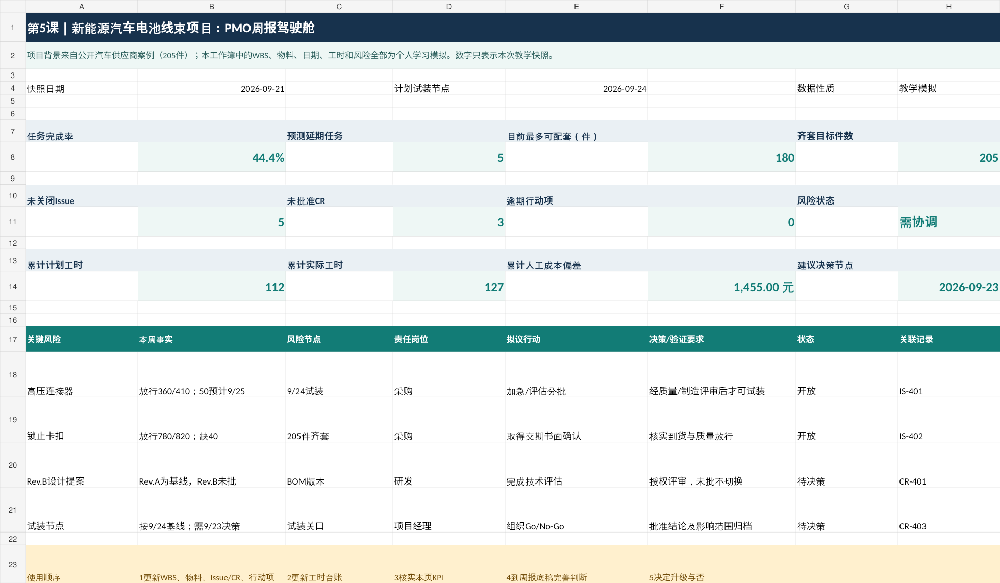

205件案例试制目标数字来自公开案例背景
44.4%WBS任务完成率模拟 4/9项
180件当前物料齐套上限模拟，不代表已生产
5项预测延期任务模拟数据
01 / PROJECT CONTEXT
项目背景与业务问题
公开研究记录了2019年汽车电池线束开发与205件小批量制造项目，涉及Excel项目计划、BOM调整、设备交付及跨专业沟通。为避免混淆，本页面只将它作为业务背景；具体任务、交期、零部件数量与风险指标由个人设计模拟。
BUSINESS PROBLEM
跨部门信息分散
采购交期、研发版本、制造试装和质量放行分属不同流程；如果缺少统一台账，容易遗漏关键节点与未决问题。
PROJECT GOAL
建立可复核的项目管理闭环
把任务、物料、Issue、CR与成本放在统一口径下统计，提供风险预警、决策依据和可审阅的周报草稿。
02 / METHOD
项目管理方法
先明确交付目标和关键依赖，再持续监控执行偏差，最后通过责任分配、流程审批与会议督办形成可追溯的管理闭环。
STEP 01
WBS任务拆解
任务编码、责任人、基线、预测日期、依赖关系
STEP 02
物料齐套管理
需求量、到货量、质量放行、理论配套上限
STEP 03
Issue风险跟踪
问题分级、升级期限、责任部门、关闭证据
STEP 04
CR变更控制
影响评估、评审意见、正式授权、执行状态
STEP 05
周报与复盘
成本偏差、风险看板、行动项与待决事项
03 / DELIVERABLES
可展示的项目成果
以下看板与数据均为教学模拟快照，统计日期为2026年9月21日；不是任何汽车企业的生产系统或真实绩效。

项目看板预览。实际交互在本地运行的Streamlit应用中完成。
物料瓶颈识别
模拟连接器放行360个、每件用2个，理论配套上限为180件；其余必需物料仍可能构成新的瓶颈。
问题与变更边界
Issue用于推动风险处理，CR用于评估需要正式批准的变更；AI不得自行批准设计或质量放行。
工时成本复盘
模拟实际累计127小时，较同期计划多15小时；人工成本偏差+1,455元，不等于最终项目超支。
04 / FILES
下载与核验材料
提供可复核文件。演示项目不包含企业机密、真实供应商记录或个人数据。
05 / INSIGHTS
项目收获与复盘
我把项目管理理解为一条可以追溯的链条：明确交付要求、识别关键约束、建立统一数据口径、持续跟进风险，并将需要授权的决策交给相应负责人。Python提升分析效率，大模型只承担解释和报告草拟，不代替业务验证和审批。
项目性质说明：本成果是基于公开研究背景自主构建的个人教学模拟项目，不代表本人在蔚来或其他车企任职；所有执行指标和操作记录均为模拟，不用于证明真实项目绩效。产品原型未在企业生产环境部署。